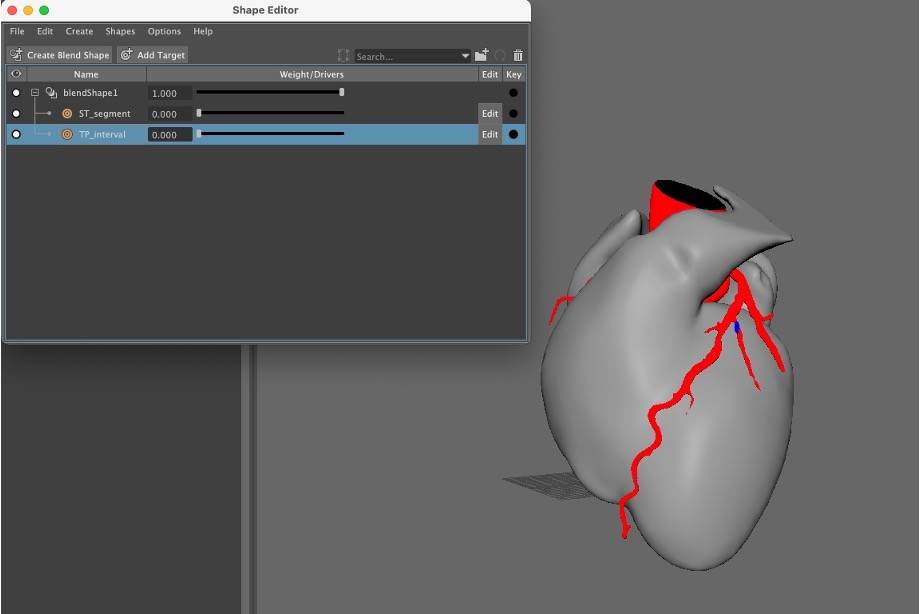
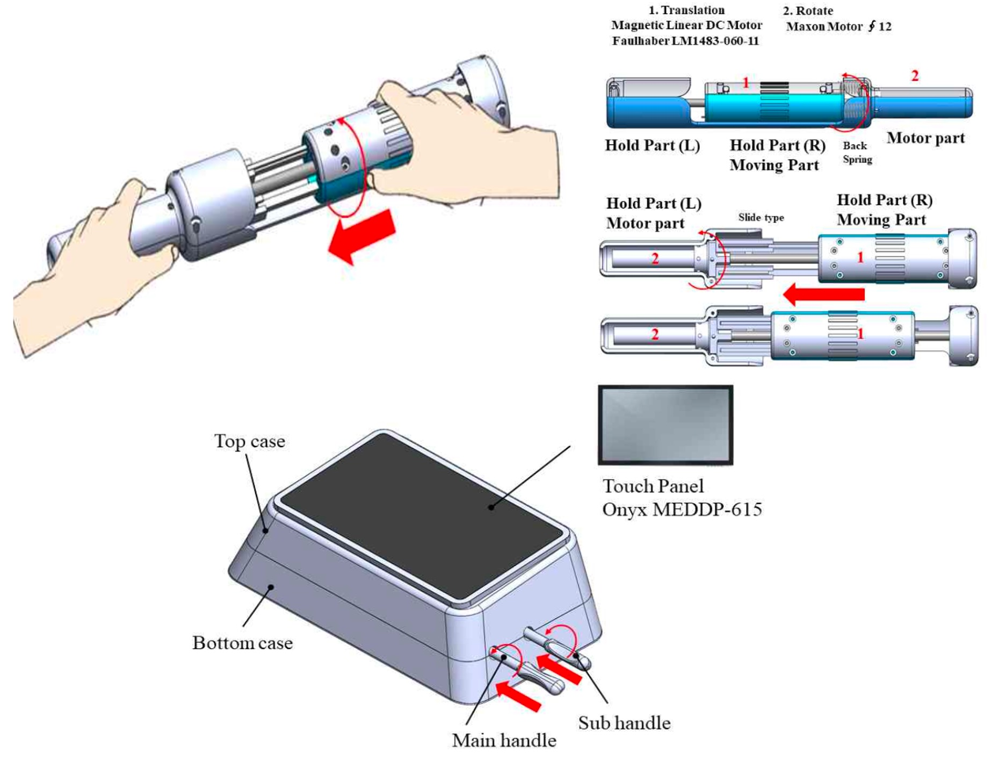
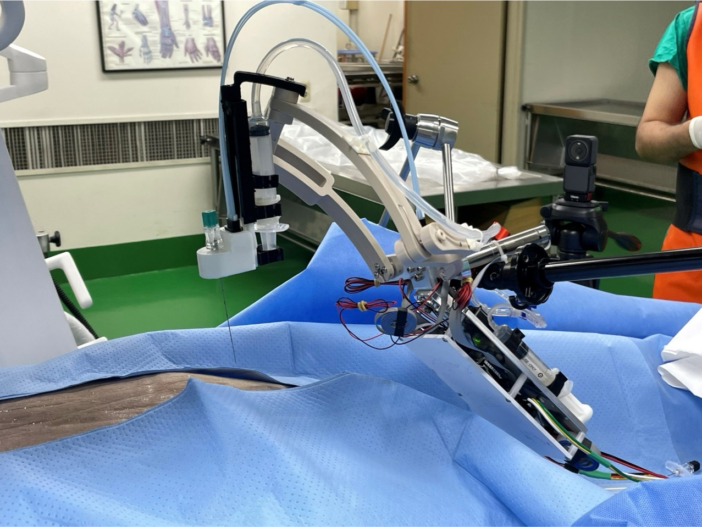
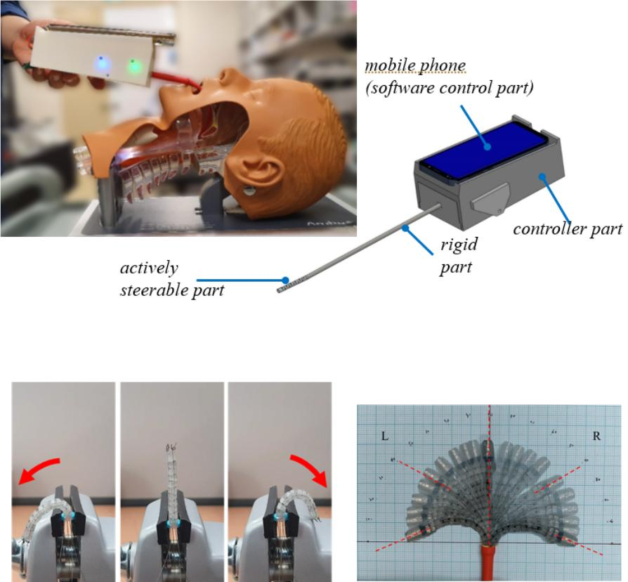
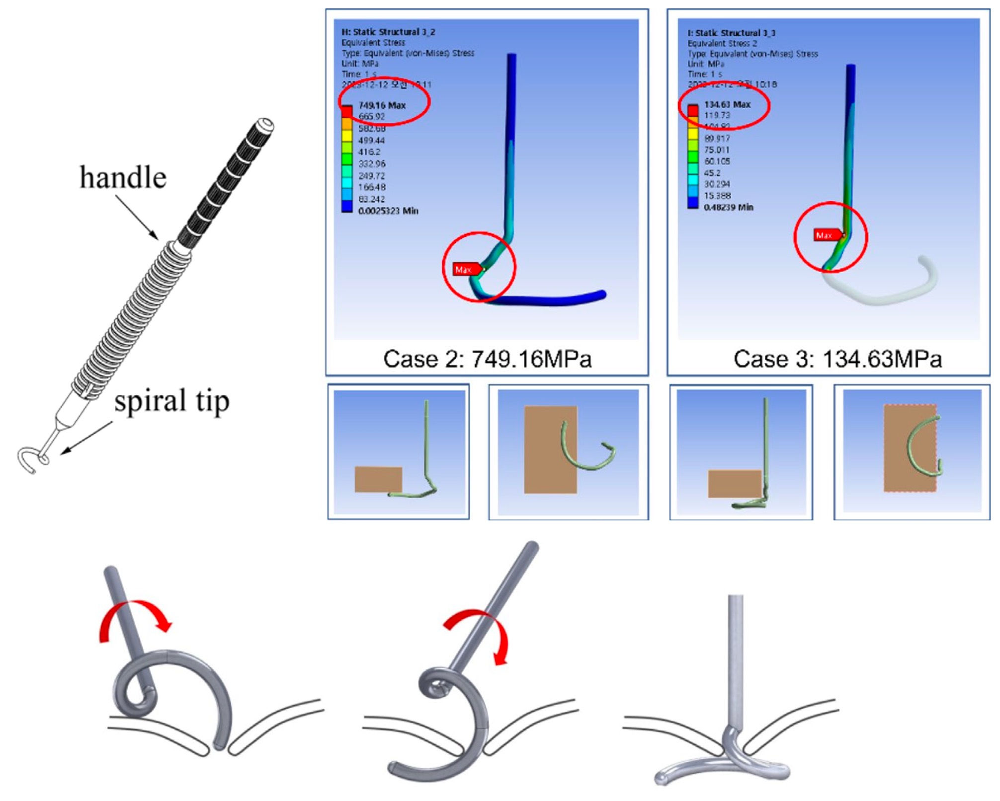
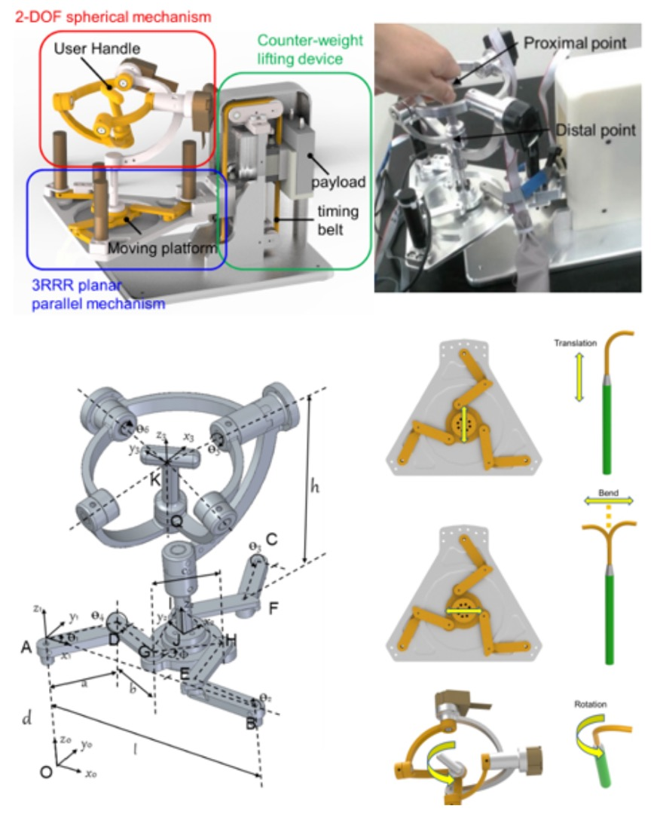

My research activities include the design, kinematic and structural analysis, algorithm development, simulation, and control of mechanisms, devices, and robots applicable to the clinical field, along with their prototyping and evaluation.
/* 1 */

Cardiovascular intervention simulation
Cardiovascular interventional procedure simulation is a component of virtual environment-based tele-mentoring services, and for this purpose, simulations are being developed for actions such as inserting flexible procedural tools (wires, catheters, etc.) into the cardiovascular system and situations where blood vessels expand due to ballooning of a catheter during heartbeats. This is planned to be expanded to TAVI, etc.

Haptic inferece for interative simulation
In a virtual environment-based simulation required for tele-mentoring service, a physical master device that allows a user to manipulate a virtual interventional tool (wire or catheter) enables haptic feedback (or rendering) from the interaction between the surgical tool and blood vessels in the virtual environment. Considering movements that can be used in various cardiovascular interventional procedures, we are developing a haptic interface structure to be used as a master device and performing work to link it with the simulation.

Needle end-effector
Cardiovascular interventional procedure simulation is a component of virtual environment-based tele-mentoring services, and for this purpose, simulations are being developed for actions such as inserting flexible procedural tools (wires, catheters, etc.) into the cardiovascular system and situations where blood vessels expand due to ballooning of a catheter during heartbeats. This is planned to be expanded to TAVI, etc.
Haptic inferece for interative simulation
In a virtual environment-based simulation required for tele-mentoring service, a physical master device that allows a user to manipulate a virtual interventional tool (wire or catheter) enables haptic feedback (or rendering) from the interaction between the surgical tool and blood vessels in the virtual environment. Considering movements that can be used in various cardiovascular interventional procedures, we are developing a haptic interface structure to be used as a master device and performing work to link it with the simulation.

Manipulator for Transurethral Resection of Bladder Tumors (TURBT)
Transurethral resection of bladder tumor (TURBT) is a common method in urology for the diagnosis and treatment of bladder cancer, especially in non-muscle invasive bladder cancer. However, the surgery using the resectoscope, which is one of rigid-type endoscopy with a resection loop, has some limitations and difficulties such as difficulty in approach to deep parts of the bladder, uncomfortable posture of the surgeon during surgery, and inconsistency of the master-slave coordinate system.

Robotic mechanism & master device for Transoral Surgery
The transoral surgery is to remove mouth or throat cancer in which the surgeon uses a complicated computer system, laser dissector, and surgical tools. To enhance the surgical procedure more accurately and safely, robotic systems for transoral surgery with continuum sections has been developed worldwide. In this project, we develop a slave end-effector with a flexible endoscopic mechanism and master interface as core components of a tele-operative transoral surgery robot system. The end-effector is designed as the continuum robot module with ball-socket joints and translational module for 4 DOF motion. The master interface is also designed to give a user command for the slave end-effector's motion. The final goal of the system made by collaboration with Hanyang Digitech, KIST, and Asan Medical Center (optics) is to perform clinical trial for one or two patients with tonsilitis.

Actively controlled articulable endoscope system for minimally invasive point-of-care diagnostics
The study aimed to demonstrate the feasibility and acceptability of smartphone-based wide-field articulable endoscope system for minimally invasive clinical applications in resource-poor countries. A thin articulable endoscope system that can be attached to and actively controlled by a smartphone was designed and constructed. The system consists of a flexible endoscopic probe with a continuum mechanism, four motor modules for articulation, a microprocessor for controlling the motor with a smartphone, and a homebuilt application for streaming, capturing, adjusting images and video, and controlling the motor module with a joystick-like user interface. The smartphone and motor module are connected via an integrated C-type On-The-Go (OTG) Universal Serial Bus (USB) hub. We tested the device in several human-organ phantoms to evaluate the usability and utility of the smartphone-based articulating endoscope system. The resolution (960 × 720 pixels) of the device was found to be acceptable for medical diagnosis. The maximum bending angle of 110° was designed. The distance from the base of the articulating module to the tip of the endoscope was 45 mm. The angle of the virtual arc was 40.0°, for a curvature of 0.013. The finest articulation resolution was 8.9°. The articulating module succeeded in imaging all eight octants of a spherical target, as well as all four quadrants of the indices marked in human phantoms.

Medical Devices for Frontal Sinus Bone Fracture Surgery
We propose a spiral tool and pulling mechanism for closed reduction facial bone fracture. Using prototypes, we present that the suggested surgical tool and mechanism are good alternatives for reduction of facial bone.

Design of master device of robot system for arrhythmia ablation
This study presents a new master manipulator applied to robotic systems for arrhythmia ablation. The manipulator is designed to implement the concept of two different master-slave teleoperation controls in the clinical application. One is the conventional control between the master and catheter-handle in the slave site and the other is catheter tip manipulation corresponding the master motion. For the purpose, the master has six degrees of freedom (DOF) and consists of three main components: a spherical mechanism for rotational motion of 2-DOF, 3-RRR planar parallel mechanism with 3-DOF, and counter-weight lifting mechanism for the vertical movement. Two mechanisms except the lifting mechanism are parallel chains and structurally more complicated. Therefore, their forward kinematics are analyzed, and workspaces are simulated. To evaluate the applicability for robotic catheter systems, the manipulator prototype was tested for its smoothness, workspace, and teleoperation performance. The subjects in the smoothness test reported no considerable friction and jerk in free movement in the three-dimensional space as shown in the recorded curves. The workspace test shows the actual workspace is similar to the simulated one except some structural constraints in the 3-RRR mechanism. For the last test, a robotic catheter teleoperation system with a slave robot and the software structure for the robotic catheter control system with electrical connection of each component were built. The result performed by five different users shows the motion of the slave robot well tracks that of the master device with small average errors and time delay that are acceptable in robotic catheter teleoperation systems.